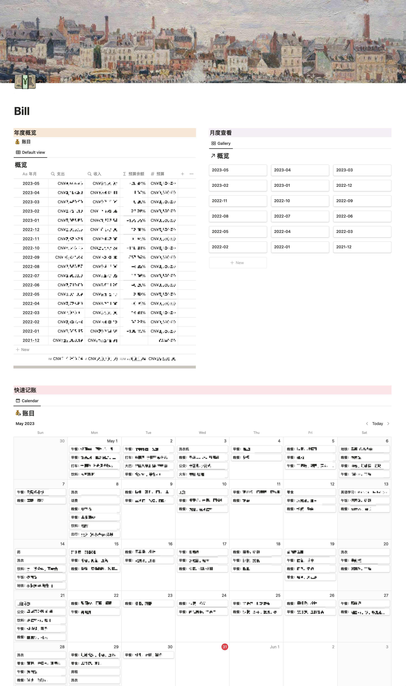
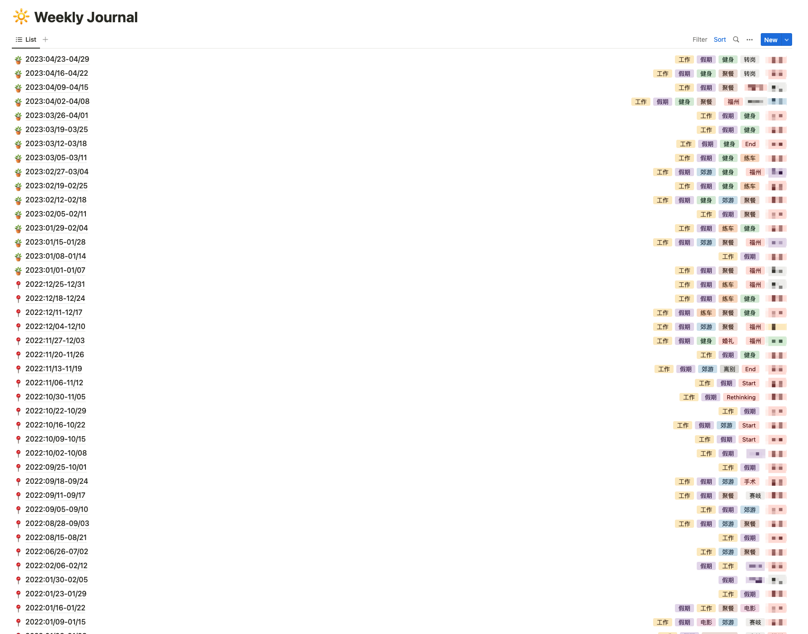
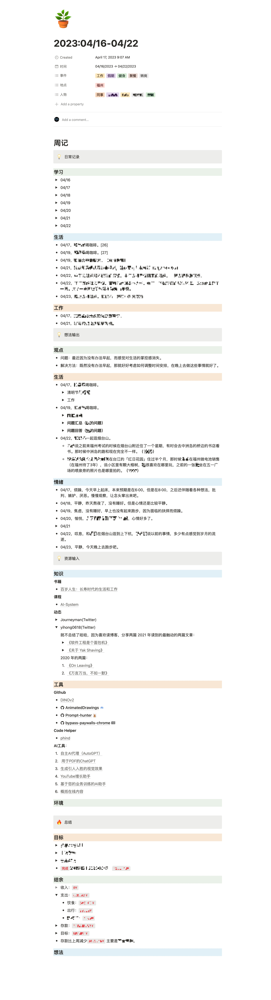

Regarding how I currently document my life, I would like to provide a comprehensive account.
My daily recording mainly consists of two parts: accounting and weekly notes, both of which are recorded in Notion.
Accounting
Notion provides various ways to display data, making it convenient, easy, and efficient to view my data records.
In terms of accounting, I do the following:
- Daily (10 minutes): I record daily expenses and income. Typically, I do this on my computer each morning. (Payment records come from AliPay or WeChat Pay).
- Weekends (20-35 minutes): I review the week’s expenses and income and make a weekly summary (total weekly expenses, consumption tendencies).
- Based on the summary in step two, I can selectively adjust my spending habits.
Benefits of accounting for me:
- Achieving Goals: By recording financial data and setting a reasonable budget, I can better track the progress of personal goals such as travel, home buying, education funds, etc.
- Controlling Expenditure: By recording each expenditure, I can better understand my spending habits and tendencies, identify unnecessary expenses and spending leaks, and make corresponding adjustments.
Account Overview
Usually, I select a date in the calendar section of the overview to record that day’s expenses and income.

Weekly Review
Clicking on “Accounts” in the account overview displays all recorded account details.
My current accounts mainly record several pieces of information: items, date, expenses, income, location.
In Notion, I can select and query the entered data, thus easily viewing the “daily, weekly, monthly consumption” and “extra consumption” situations.
Weekly Notes
Regarding weekly notes, I do the following:
- Daily: I open the weekly note recording page when I turn on my computer. Since I spend most of my time in front of the computer each day, I jot down sudden thoughts, recently learned knowledge, daily activities, and the day’s mood in my weekly notes.
- Weekends: I review the week and selectively adjust my future action strategy.
Benefits of weekly notes for me:
- Self-reflection and Growth: Weekly notes allow me to reflect on the past week’s experiences, actions, and decisions. By reviewing my actions and thoughts, I can better understand my behavioral patterns, habits, and preferences. This self-reflection promotes personal growth.
- Goal Setting and Progress Evaluation: I use weekly notes to track and record my goal completion. This helps maintain clarity and motivation for goals, and the weekend summary provides an opportunity for continuous self-supervision and evaluation.
- Retrospection: I can trace back previous thoughts to understand personal changes. This retrospection process might make me realize that some of my current habits or opinions originated from seemingly insignificant past events. Being able to see changes in myself more intuitively also increases my sense of self-efficacy.
Weekly Notes Overview
I generally create a new weekly note document each week and record personal data in this document throughout the week.

Weekly Notes
Currently, I divide the content of my weekly notes into four sections:
- Daily Records: Only record daily activities without outputting thoughts.
- Study / Life / Work
- Thought Output: Record thoughts on daily activities as well as current emotional state.
- Views / Life / Emotions
- Resource Input: Record useful information, tools, or significant news events.
- Knowledge / Tools / Environment
- Summary: Record of weekend reviews, tracking of goal completion, current savings balance, and thoughts on the week.
- Goals / Balance / Thoughts

“In conclusion, mindful documentation of our lives isn’t just a reflection of where we stand, but an indispensable roadmap guiding us toward the person we aspire to be.
By diligently maintaining a clear and organized account of our financial activity, we gain the ability to manage and shape our financial future with precision. Meanwhile, the practice of weekly note-taking offers an avenue for introspection and growth, allowing us to refine our goals and enhance our self-understanding.
In this dynamic interplay between objective accounting and subjective introspection, we find a harmonious balance that drives personal improvement and cultivates an elevated sense of self-awareness.
The power of this mindful documentation is not just its ability to capture the past or outline the present, but its potential to project and shape our future. To paraphrase the ancient wisdom of Lao Tzu, knowing others is wisdom, but knowing the self is enlightenment. Herein lies the profound beauty of this journey, a continuous cycle of self-discovery and self-improvement that propels us forward, navigating the intricate tapestry of life.”
from ChatGPT 2023.05.31
如果您喜欢此博客或觉得它对您有用，则欢迎对此发表评论。 也欢迎您分享此博客，以便更多人可以参与。 如果博客中使用的图像侵犯了您的版权，请与我联系以将其删除。 谢谢 ！